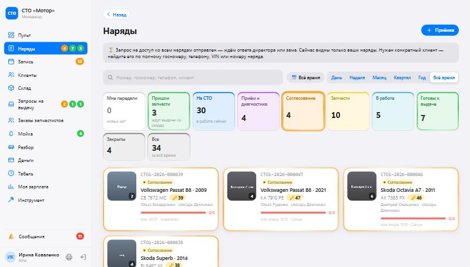
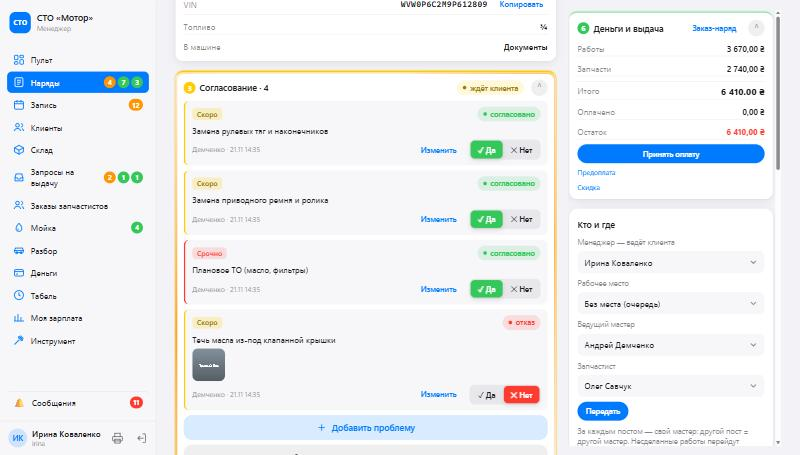
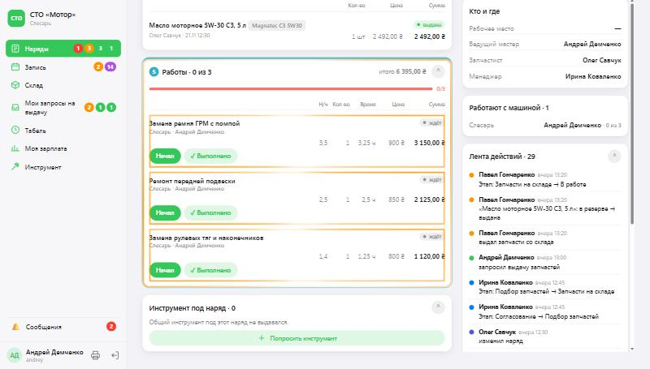
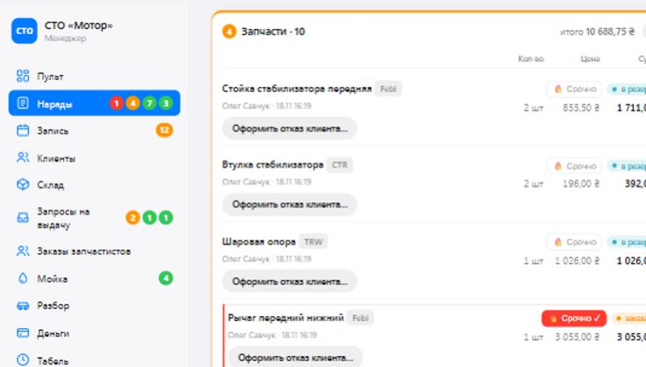
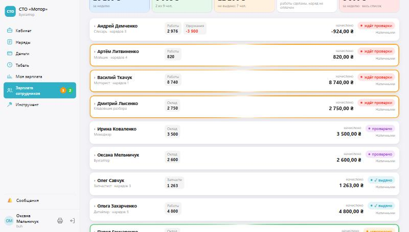
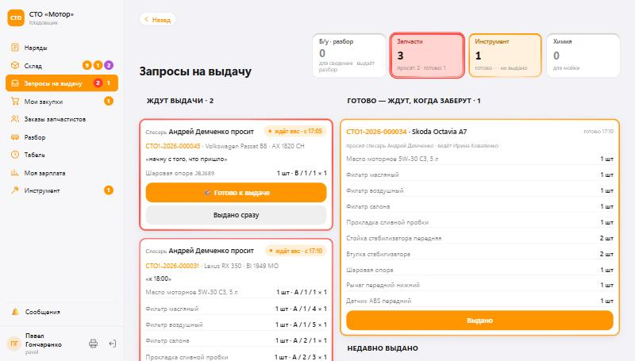
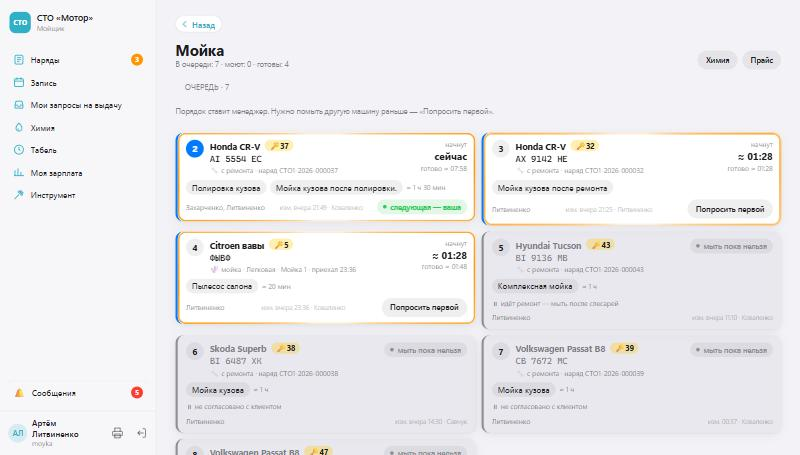

Кружки ведут к делу и обводят его
Отчёт 22.11.2026 · проверены все кружки у всех 14 сотрудников (рабочая база на сегодня, копия)
Как теперь работает
- Дело в одном наряде — нажал на кружок, открылся этот наряд прямо на нужном блоке (Проблемы / Запчасти / Работы / Деньги), нужная строка обведена.
- Нарядов несколько — открывается список нарядов с фильтром: обведена плитка-фильтр и каждый наряд с делом.
- Дело не в наряде — открывается нужная страница: обведены плитка и строки (запросы на выдачу, зарплата по людям, «Всегда в наличии», запросы доступа, машины в очереди мойки…).
- Рамка бежит по краю, цвет — как у кружка (🔴 🟠 🟣 🟢), и горит, пока дело не сделано. Сделали — цифра гаснет, рамка уходит (обновление раз в 15 секунд).
- «Для сведения» (сиреневая обводка у кружка главного кладовщика) — без рамки: делает другой.
- Запчастист: кружок «черновики под наряды» вёл на несуществующую вкладку — теперь на «Заказать».
- Кладовщик: после правки «срочно» проверка цифр у кладовщика падала — исправлено (в интернет не уходило).
- «Всегда в наличии»: обводились и строки «почти на норме» — теперь только то, что ниже нормы (как в кружке).
- Мойщик: кружок вёл на пустое место — теперь обведена каждая машина, которую можно мыть.
- Запросы доступа, «Приход», «Лишнее после отказов», зарплата — раньше там нечего было обвести; теперь обводятся строки.
Как это выглядит







Все кружки всех сотрудников
Под каждым входом открыта ссылка каждого кружка; «✓» — страница открылась и на ней есть что обвести. Ошибок: 0.
| Вход | Кружок | Что значит | Куда ведёт | Что обведено |
|---|---|---|---|---|
| admin | /orders 🔴4 | срочная деталь не пришла — поторопите поставщика · просят доступ ко всем нарядам · просят открыть наряд заново | /orders/8d445520-89f6-4878-a7e4-2d670113371e#parts | ✓ блок #parts, строк: 1, #parts |
| admin | /orders 🟠4 | согласовать с клиентом | /orders?tab=approve | ✓ блок #problems, строк: 1, нарядов в списке: 4 из 4, плитка |
| admin | /orders 🟢7 | готовы к выдаче клиенту | /orders?tab=ready | ✓ блок #money, нарядов в списке: 7 из 7, плитка |
| admin | /clients 🔴1 | менеджер просит доступ к клиенту | /access-requests#clients | ✓ #clients |
| admin | /clients 🔴1 | просят доступ ко всем нарядам и клиентам | /access-requests#all | ✓ #all |
| admin | /stock/issues 🔴2 | просят выдать запчасти | /stock/issues | ✓ карточки цвета |
| admin | /stock/issues 🟠1 | запчасти подготовлены — ещё не выданы | /stock/issues | ✓ карточки цвета |
| admin | /tools 🟠1 | инструмент подготовлен — ещё не выдан | /stock/issues?tab=tools | ✓ плитка, карточки цвета |
| admin | /wash 🟢4 | помыты — позвонить клиенту, оплата и выдача | /wash?tab=now | ✓ блок #money, нарядов в списке: 4 из 4, плитка |
| admin | /stock 🔴1 | клиент отказался — решите с заказом у поставщика | /stock/leftovers | ✓ строки |
| admin | /stock 🟠10 | ждём приход — подготовиться принять · лишнее после отказа на складе — оставить, вернуть или продать | /stock/receive?tab=wait | ✓ плитка, строки |
| admin | /stock 🟣2 | «Всегда в наличии» — ниже нормы | /stock/always | ✓ строки |
| admin | /razbor/shipping 🔴3 | подготовить | /razbor/shipping?st=prepare | ✓ плитка |
| admin | /razbor/shipping 🟠1 | готово — ждёт покупателя или отправки | /razbor/shipping?st=ready_ship | ✓ плитка |
| admin | /razbor/prices 🔴7 | новые детали — утвердить цену | /razbor/prices?tab=new | ✓ плитка |
| admin | /razbor/prices 🟠1 | просят изменить цену | /razbor/prices?tab=change | ✓ плитка |
| admin | /razbor 🔴1 | отказано в утверждении — посмотреть причину | /razbor?v=parts&f=declined | ✓ плитка (открыта) |
| admin | /site 🔴2 | новые на продажу — утвердить цену | /site?t=new&f=wait | ✓ плитка |
| admin | /payroll/weeks 🟠8 | проверить · утвердить к выплате | /payroll/weeks?d=2026-11-09 | ✓ строки |
| admin | /payroll/weeks 🟢2 | выдать | /payroll/weeks?d=2026-11-09 | ✓ строки |
| admin | /schedule 🟠12 | завтра записаны — напомнить | /schedule/remind#call | ✓ #call, карточки цвета |
| director | /orders 🔴1 | просят доступ ко всем нарядам | /access-requests#all | ✓ #all |
| director | /orders 🔴2 | просят открыть наряд заново | /access-requests#reopen | ✓ #reopen |
| director | /clients 🔴1 | менеджер просит доступ к клиенту | /access-requests#clients | ✓ #clients |
| director | /clients 🔴1 | просят доступ ко всем нарядам и клиентам | /access-requests#all | ✓ #all |
| director | /wash 🟢4 | помыты — позвонить клиенту, оплата и выдача | /wash?tab=now | ✓ блок #money, нарядов в списке: 4 из 4, плитка |
| director | /stock 🟣2 | «Всегда в наличии» — ниже нормы | /stock/always | ✓ строки |
| director | /razbor/prices 🔴7 | новые детали — утвердить цену | /razbor/prices?tab=new | ✓ плитка |
| director | /razbor/prices 🟠1 | просят изменить цену | /razbor/prices?tab=change | ✓ плитка |
| director | /site 🔴2 | новые на продажу — утвердить цену | /site?t=new&f=wait | ✓ плитка |
| director | /payroll/weeks 🟠2 | утвердить к выплате | /payroll/weeks?d=2026-11-09 | ✓ строки |
| director | /schedule 🟠12 | завтра записаны — напомнить | /schedule/remind#call | ✓ #call, карточки цвета |
| deputy | /orders 🔴3 | просят доступ ко всем нарядам · просят открыть наряд заново | /access-requests#all | ✓ #all |
| deputy | /orders 🟠4 | согласовать с клиентом | /orders?tab=approve | ✓ блок #problems, строк: 1, нарядов в списке: 4 из 4, плитка |
| deputy | /orders 🟢7 | готовы к выдаче клиенту | /orders?tab=ready | ✓ блок #money, нарядов в списке: 7 из 7, плитка |
| deputy | /clients 🔴1 | менеджер просит доступ к клиенту | /access-requests#clients | ✓ #clients |
| deputy | /clients 🔴1 | просят доступ ко всем нарядам и клиентам | /access-requests#all | ✓ #all |
| deputy | /wash 🟢4 | помыты — позвонить клиенту, оплата и выдача | /wash?tab=now | ✓ блок #money, нарядов в списке: 4 из 4, плитка |
| deputy | /stock 🟣2 | «Всегда в наличии» — ниже нормы | /stock/always | ✓ строки |
| deputy | /razbor/prices 🔴7 | новые детали — утвердить цену | /razbor/prices?tab=new | ✓ плитка |
| deputy | /razbor/prices 🟠1 | просят изменить цену | /razbor/prices?tab=change | ✓ плитка |
| deputy | /site 🔴2 | новые на продажу — утвердить цену | /site?t=new&f=wait | ✓ плитка |
| deputy | /schedule 🟠12 | завтра записаны — напомнить | /schedule/remind#call | ✓ #call, карточки цвета |
| irina | /orders 🟠4 | согласовать с клиентом | /orders?tab=approve | ✓ блок #problems, строк: 1, нарядов в списке: 4 из 4, плитка |
| irina | /orders 🟢7 | готовы к выдаче клиенту | /orders?tab=ready | ✓ блок #money, нарядов в списке: 7 из 7, плитка |
| irina | /orders 🟢3 | пришли запчасти — ждут выдачи | /orders?tab=arrived | ✓ блок #parts, нарядов в списке: 3 из 3, плитка |
| irina | /ready 🟠2 | запчасти — ждут кладовщика | /ready#waiting | ✓ #waiting, карточки цвета |
| irina | /ready 🟢1 | кладовщик подготовил | /ready#mine | ✓ #mine, карточки цвета |
| irina | /ready 🟢1 | инструмент подготовлен — забрать у окошка и отнести мастеру | /ready#tools | ✓ #tools, карточки цвета |
| irina | /wash 🟢4 | помыты — позвонить клиенту, оплата и выдача | /wash?tab=now | ✓ блок #money, нарядов в списке: 4 из 4, плитка |
| irina | /schedule 🟠12 | завтра записаны — напомнить | /schedule/remind#call | ✓ #call, карточки цвета |
| oleg | /orders 🔴1 | срочная деталь не пришла — поторопите поставщика | /orders/8d445520-89f6-4878-a7e4-2d670113371e#parts | ✓ блок #parts, строк: 1, #parts |
| oleg | /orders 🟠1 | подобрать запчасти | /orders/d686fe8f-4238-4f33-be31-67fc9fb6684d#parts | ✓ блок #parts, строк: 1, #parts |
| oleg | /orders 🟢3 | пришли запчасти — ждут выдачи | /orders?tab=arrived | ✓ блок #parts, нарядов в списке: 3 из 3, плитка |
| oleg | /wash 🟠2 | химия заканчивается — заказать | /wash?tab=chem | ✓ плитка |
| oleg | /stock 🔴1 | клиент отказался — решите с заказом у поставщика | /stock/leftovers | ✓ строки |
| oleg | /stock 🟠1 | лишнее после отказа на складе — оставить, вернуть или продать | /stock/leftovers | ✓ строки |
| oleg | /my-orders 🟠1 | черновики под наряды — нажмите «✓ Заказал» | /my-orders?st=todo | ✓ плитка |
| pavel | /stock/issues 🔴2 | просят выдать запчасти | /stock/issues | ✓ карточки цвета |
| pavel | /stock/issues 🟠1 | запчасти подготовлены — ещё не выданы | /stock/issues | ✓ карточки цвета |
| pavel | /tools 🟠1 | инструмент подготовлен — ещё не выдан | /stock/issues?tab=tools | ✓ плитка, карточки цвета |
| pavel | /stock 🟠9 | ждём приход — подготовиться принять | /stock/receive?tab=wait | ✓ плитка, строки |
| pavel | /stock 🟠1 | лишнее после отказа на складе — оставить, вернуть или продать | /stock/leftovers | ✓ строки |
| pavel | /stock 🟣2 | «Всегда в наличии» — ниже нормы | /stock/always | ✓ строки |
| pavel | /purchases 🟠1 | ваши черновики — нажмите «Заказан» | /purchases?tab=draft | ✓ плитка |
| dmitro | /razbor/shipping 🔴3 | подготовить | /razbor/shipping?st=prepare | ✓ плитка |
| dmitro | /razbor/shipping 🟠1 | готово — ждёт покупателя или отправки | /razbor/shipping?st=ready_ship | ✓ плитка |
| dmitro | /razbor 🔴1 | отказано в утверждении — посмотреть причину | /razbor?v=parts&f=declined | ✓ плитка (открыта) |
| glav | /stock/issues 🔴2 | просят выдать запчасти | /stock/issues | ✓ карточки цвета |
| glav | /stock/issues 🟠1 | запчасти подготовлены — ещё не выданы | /stock/issues | ✓ карточки цвета |
| glav | /tools 🟠1 | инструмент подготовлен — ещё не выдан | /stock/issues?tab=tools | ✓ плитка, карточки цвета |
| glav | /stock 🟠9 | ждём приход — подготовиться принять | /stock/receive?tab=wait | ✓ плитка, строки |
| glav | /stock 🟠1 | лишнее после отказа на складе — оставить, вернуть или продать | /stock/leftovers | ✓ строки |
| glav | /stock 🟣2 | «Всегда в наличии» — ниже нормы | /stock/always | ✓ строки |
| glav | /razbor/shipping 🔴3 | подготовить | /razbor/shipping?st=prepare | ✓ плитка |
| glav | /razbor/shipping 🟠1 | готово — ждёт покупателя или отправки | /razbor/shipping?st=ready_ship | ✓ плитка |
| glav | /razbor 🔴1 | отказано в утверждении — посмотреть причину | /razbor?v=parts&f=declined | ✓ плитка (открыта) |
| andrey | /orders 🔴1 | новые — посмотреть | /orders/c5737bf5-7e4a-4771-b541-639385581af4#problems | ✓ блок #problems, #problems |
| andrey | /orders 🟠3 | ваши работы — можно делать | /orders/c3984e23-b2c0-4eaa-80ca-5233281e78b8#works | ✓ блок #works, строк: 3, #works |
| andrey | /orders 🟢3 | пришли запчасти — ждут выдачи | /orders?tab=arrived | ✓ блок #parts, нарядов в списке: 3 из 3, плитка |
| andrey | /orders 🟢1 | запчасти на складе — можно начинать | /orders/27d198cd-137d-4481-b7aa-2e8fcaa6f85d#parts | ✓ блок #parts, #parts |
| andrey | /my-requests 🟠2 | ждут кладовщика или менеджера | /my-requests?tab=parts | ✓ карточки цвета |
| andrey | /my-requests 🟢1 | готово — забрать у окошка кладовщика | /my-requests?tab=parts | ✓ карточки цвета |
| andrey | /my-requests 🟢1 | инструмент готов — забрать у кладовщика | /my-requests?tab=tools | ✓ карточки цвета |
| andrey | /schedule 🟠2 | сегодня ждём клиентов | /schedule#zp-sig | ✓ #zp-sig |
| andrey | /schedule 🟣14 | к вам записали — отметьте «Видел» | /schedule#zp-sig | ✓ #zp-sig |
| elektro | /orders 🔴2 | новые — посмотреть | /orders?tab=intake | ✓ блок #problems, нарядов в списке: 2 из 2, плитка |
| elektro | /orders 🟠4 | ваши работы — можно делать | /orders?tab=active | ✓ блок #works, строк: 1, нарядов в списке: 4 из 4, плитка |
| elektro | /orders 🟢2 | пришли запчасти — ждут выдачи | /orders?tab=arrived | ✓ блок #parts, нарядов в списке: 2 из 2, плитка |
| elektro | /my-requests 🟠1 | ждут кладовщика или менеджера | /my-requests?tab=parts | ✓ карточки цвета |
| elektro | /my-requests 🟢1 | готово — забрать у окошка кладовщика | /my-requests?tab=parts | ✓ карточки цвета |
| elektro | /schedule 🟠1 | сегодня ждём клиентов | /schedule#zp-sig | ✓ #zp-sig |
| elektro | /schedule 🟣10 | к вам записали — отметьте «Видел» | /schedule#zp-sig | ✓ #zp-sig |
| motor | /orders 🔴1 | новые — посмотреть | /orders/3736b22c-264c-4193-bd6e-5000ed99f653#problems | ✓ блок #problems, #problems |
| motor | /orders 🔴1 | вам передали наряд — нажмите «Принял» | /orders/8d445520-89f6-4878-a7e4-2d670113371e#ho-accept | ✓ блок #ho-accept, #ho-accept |
| motor | /orders 🟢1 | пришли запчасти — ждут выдачи | /orders/5be6bb84-8b65-416d-82b3-b90e30739538#parts | ✓ блок #parts, #parts |
| motor | /my-requests 🟠1 | ждут кладовщика или менеджера | /my-requests?tab=parts | ✓ карточки цвета |
| motor | /my-requests 🟢1 | инструмент выдан — подтвердите «Получил» | /my-requests?tab=tools | ✓ карточки цвета |
| motor | /schedule 🟣9 | к вам записали — отметьте «Видел» | /schedule#zp-sig | ✓ #zp-sig |
| motor | /schedule 🟢1 | клиент приехал — начните работу | /schedule#zp-sig | ✓ #zp-sig |
| moyka | /orders 🟠3 | ждут мойки — ваши (можно мыть) | /wash/queue#next | ✓ нарядов в списке: 3 из 3, #next |
| detail | /orders 🟠2 | ждут мойки — ваши (можно мыть) | /wash/queue#next | ✓ нарядов в списке: 2 из 2, #next |
| detail | /schedule 🟣11 | к вам записали — отметьте «Видел» | /schedule#zp-sig | ✓ #zp-sig |
| buh | /payroll/weeks 🟠3 | проверить | /payroll/weeks?d=2026-11-09 | ✓ строки |
| buh | /payroll/weeks 🟢2 | выдать | /payroll/weeks?d=2026-11-09 | ✓ строки |